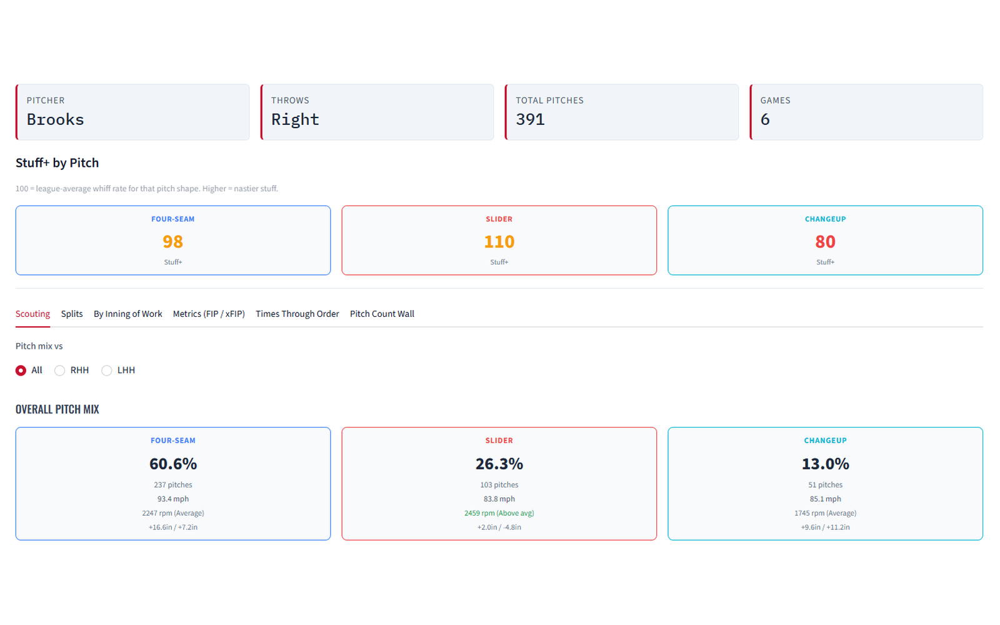
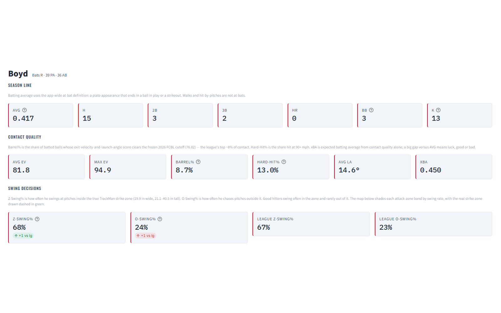
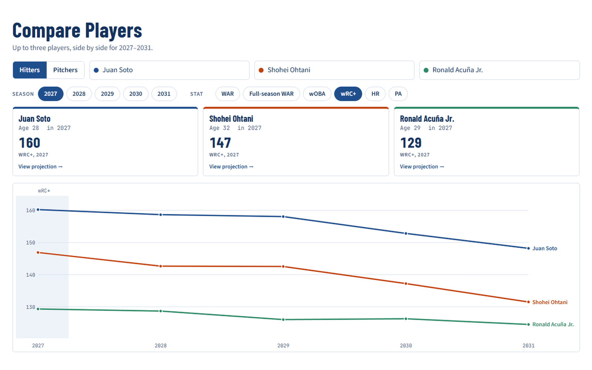
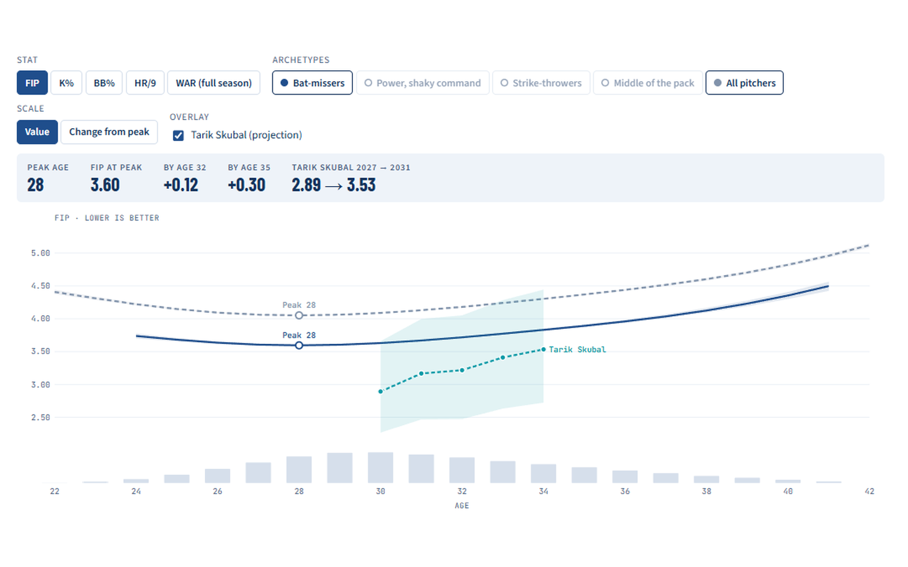

I build baseball analytics tools that coaches and players use to prepare and get better. This past summer, that meant running TrackMan and building the reporting platform for the Nashua Silver Knights.
M.S. in Business Analytics at UMass Amherst, finishing December 2026. Former four-year college corner infielder at Salve Regina.
Projects
DiamondIntel
TrackMan reporting for coaches and players
The Silver Knights coaching staff used DiamondIntel through the 2026 season for pregame plans, scouting reports, and player evaluations. It turns raw TrackMan files into reports a coach can read in the dugout, and exports them to PDF.
Scouting report generator that builds pitcher and hitter reports and exports them as print-ready PDFs
Stuff+ pitch model built with XGBoost and pitcher-grouped cross-validation
xBA, xwOBA, and catcher framing
3D pitch tunneling from the catcher's view, marked at the hitter's commit point
Built with Python, Streamlit, pandas, and XGBoost.
Pitch tunneling from the catcher's view. The yellow frame is the commit point, about 24 feet from the plate.

Pitcher scouting report

Hitter report
MLB Projections
Five-year forecasts for MLB hitters and pitchers
A projection system for 2027 through 2031, built from public Statcast and FanGraphs data. It beat Marcel in all 18 backtest seasons and on a locked 2026 holdout, and the 2027 projections are published as a live test.
Aging curves for each type of player, with an 80% range for every projection
Statcast expected stats blended with results-based performance
Comparable players matched within the same archetype and age
Side-by-side comparisons for up to three players
Built with Python, Statcast, and FanGraphs data. Published on GitHub Pages.
Comparable players for Ceddanne Rafaela, with projected wRC+ against the comp median

Comparing three hitters, 2027–2031

Aging curves with Tarik Skubal overlaid
Experience and education
Experience
May–August 2026
Baseball Analytics Intern
Nashua Silver Knights, Futures League
Built DiamondIntel for the coaching staff, ran Monte Carlo playoff simulations, and wrote pregame and postgame reports. Served on the league's TrackMan Committee.
January–May 2026
Director of Baseball Data and Analytics
UMass Lowell Baseball, Division I
Led the data function, combining several third-party platforms into consistent internal and opponent research reports, and presented findings to coaches and players.
Education
December 2026
M.S. in Business Analytics
UMass Amherst, Isenberg School of Management
4.0 GPA.
May 2025
B.S. in Finance, minor in Business Administration
Salve Regina University
Magna cum laude. Four-year NCAA Division III baseball player.
Tools I use: Python (pandas, scikit-learn, XGBoost), Streamlit, SQL, Tableau, Git, TrackMan, and Statcast.